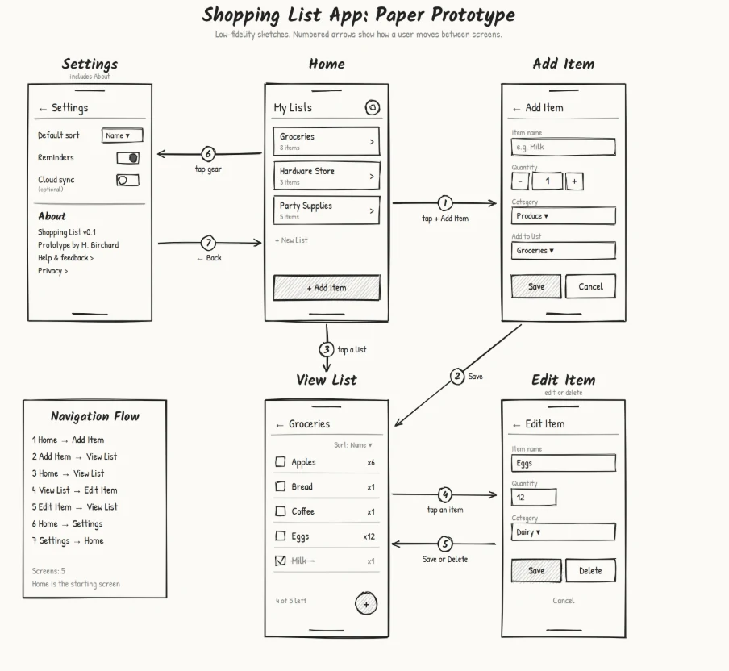
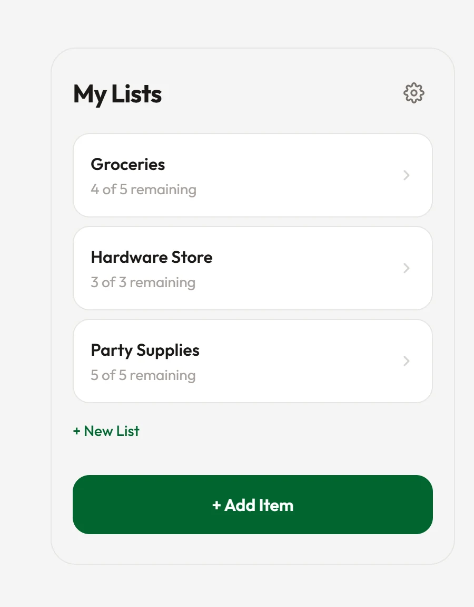
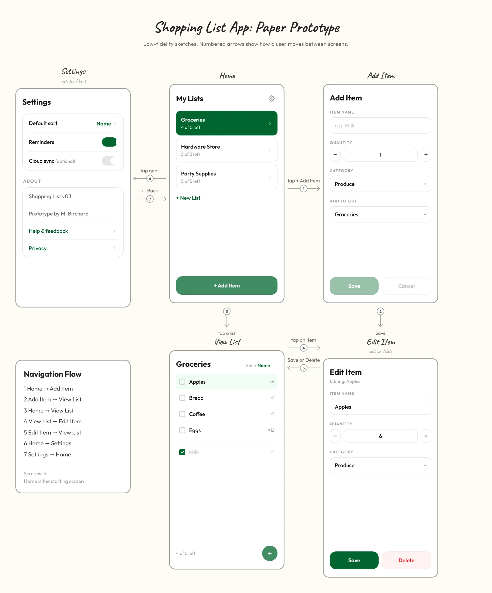
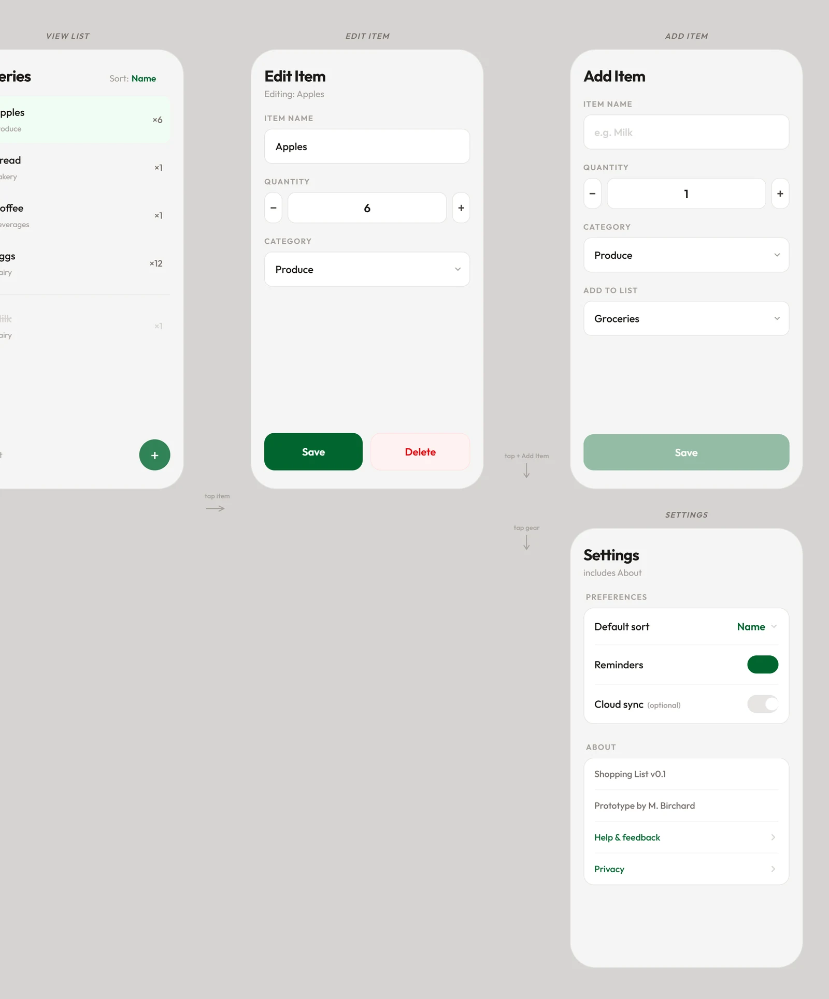

Shopping List App
A five-screen mobile flow taken from a hand-drawn paper prototype to a working, clickable prototype in Figma Make. Every screen, and every path between them, mapped and testable.


The brief
Design a paper prototype for a shopping list app covering Home, Add Item, View List, Edit/Delete and Settings/About, with the navigation between them clearly shown.
Navigation first
Before styling anything I mapped every path a user can take. Seven numbered routes connect five screens, and Home is the only starting point. Numbering the arrows turned the sketch into something a reviewer could walk through step by step.
From sketch to something you can click
I rebuilt the sketch in Figma Make as a working prototype. Lists, items and settings hold real state, so checking off milk updates the "left" count on Home, and a saved item shows up in View List. Below is the full board in its starting state. Try it.

Refining the screens
A higher-fidelity pass added item categories under each name, a dedicated Preferences group in Settings, and a softer, rounded device frame.

Design decisions
- Checked items drop below a divider and fade, so what is left to buy is always on top.
- Delete asks for confirmation inline instead of a modal, keeping the user on the same screen.
- Save stays disabled until an item has a name, which prevents empty entries without an error message.
- One accent color carries every primary action, so the next step is always obvious.